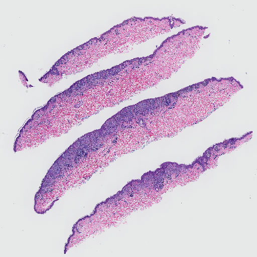
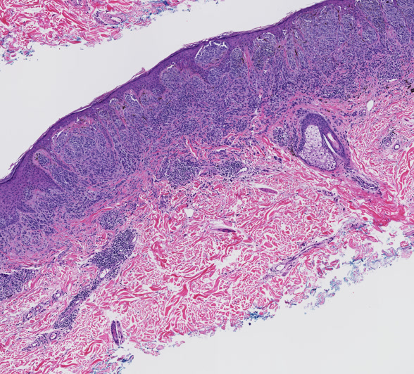
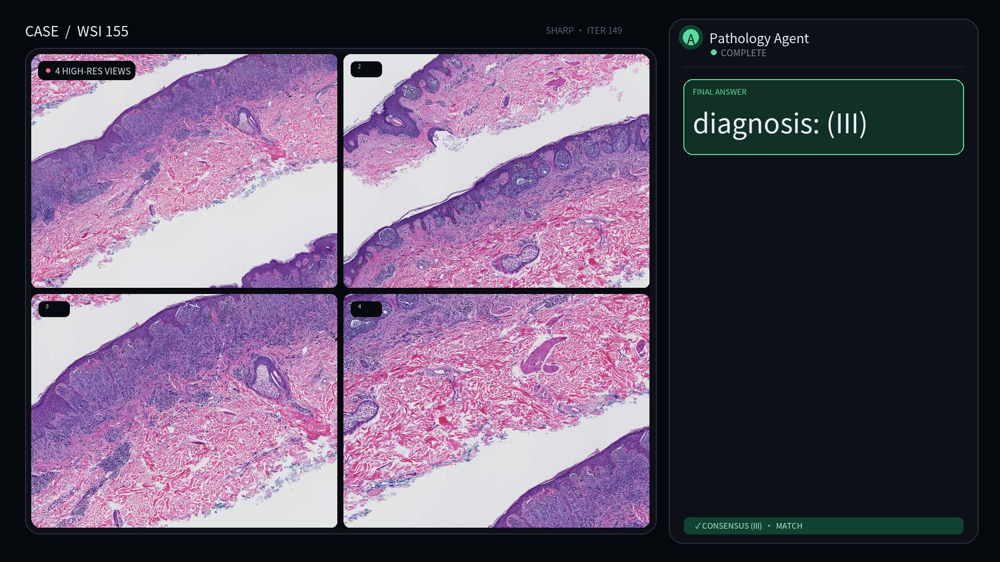

Selected correct sample · WSI 155
Whole-slide overview → four zooms → diagnosis (III)
点击播放；建议在桌面端全屏观看逐字输出。视频无配音，全部叙事都来自画面中的原始英文轨迹。
complete trace
4 real zooms
prediction = consensus
PathReason 在一条连续的 Agent 轨迹中观察病理切片、调用 zoom tool、读取真实高分辨率 patch，并给出最终诊断。 这里展示一个预测与共识标签一致的 held-out 样本。
右侧 Agent 面板逐字播放 dump 中的完整英文输出；工具名、bbox、视野切换、高分辨率返回与最终 answer 均按原始顺序呈现。
点击播放；建议在桌面端全屏观看逐字输出。视频无配音，全部叙事都来自画面中的原始英文轨迹。
Demo 没有额外旁白或中文改写。不同输出类型通过 Agent、Tool Call、Tool Response 和 Final Answer 卡片直接区分。
<think> 内容逐字出现并自动滚动。image_zoom_in_tool 显示真实 bbox 与 frame。diagnosis: (III)。全片总览与所有高分辨率视野均来自相同 held-out 样本；病理图像、bbox 和 patch 没有经过生成模型合成。



页面只陈述这一个 qualitative case 的事实，不把正确样本外推为总体临床准确率。
完整英文模型输出和工具参数也以静态 transcript 保留，便于逐条核对。